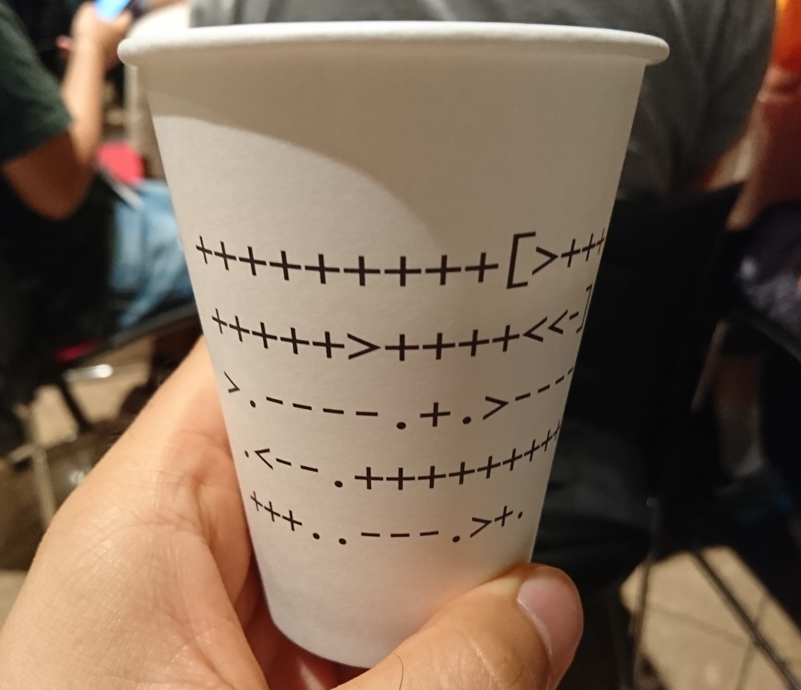

Haskell で書く Brainf*ck 処理系
何番煎じだよって感じのネタですが，久々に Brainf*ck のコードを見かけたので，久々に書いてみたくなりました．
いきさつ
先日，builderscon in tokyo 2017 というイベントに行ってきた． そこのフリードリンクコーナーにこんな紙コップが…

一流のプログラマであれば，Brainf*ck 程度の単純な処理系ぐらい目実行しろってことだろうが，ボクは3流程度のプログラマなので，ASCIIコード表が片手にないと実行できなかった…orz
まぁ内容はわかったのだが，せっかくだから久々にサクッと書いてみようと思ったわけです．
Brainf*ck
Brainf*ck の処理系は，コードの見た目こそ気持ち悪いが非常に単純．
- コードは8文字
><+-.,[]だけで構成される(それ以外は無視) - コードを頭から一文字ずつ読んで実行していく
- 一本の無限に長いテープ(メモリ)を考える
- テープは全て
0で初期化されてる - プログラムはテープの数値の変更や読み取りができる
といった感じ． 具体的には以下の通り(Wikipediaより)．
>ポインタをインクリメント，ポインタをptrとすると，C言語のptr++に相当<ポインタをデクリメント，C言語のptr--に相当+ポインタが指す値をインクリメント，C言語の(*ptr)++に相当-ポインタが指す値をデクリメント，C言語の(*ptr)--に相当.ポインタが指す値を出力に書き出す，C言語のputchar(*ptr)に相当,入力から1バイト読み込んでポインタが指す先に代入，C言語の*ptr=getchar()に相当[ポインタが指す値が0なら対応する]の直後にジャンプ，C言語のwhile(*ptr){に相当]ポインタが指す値が0でないなら対応する[にジャンプ，C言語の}に相当
作る
最終的なコードはココにある．
実行機の型を考える
関数型プログラミングは，まず型から考える(自論)．
前述したとおり，Brainf*ck の実行機は，プログラム列と無限に長いテープ(メモリ)があればよい． 組込みのリスト(単方向リスト)でも良いが，テープの上を前後(か左右)に移動するので双方向リストの方が良いだろう．
Haskell で双方向リストを実装するやり方はいろいろあるが，今回は便宜上以下のようにする．
data Tape a = Tape { front :: [a]
, current :: a
, back :: [a]
} deriving (Show)
mapCrr :: (a -> a) -> Tape a -> Tape a
mapCrr f tape = tape { current = f (current tape) }
moveFront :: Tape a -> Tape a
moveFront (Tape [] _ _) = error "front is empty."
moveFront (Tape f c b) = Tape (tail f) (head f) (c : b)
moveBack :: a -> Tape a -> Tape a
moveBack a (Tape f c []) = Tape (c : f) a []
moveBack _ (Tape f c b) = Tape (c : f) (head b) (tail b)用意した関数は以下の3つだけ(これだけで十分だから)．
mapCrrは現在の値にのみ，第一引数の関数fを適用するmoveFrontはテープのヘッダを前進させるmoveBackはテープのヘッダを後進させる- ただし，後ろへ無限に長いとするので，初期化値
aを引数で与えている
- ただし，後ろへ無限に長いとするので，初期化値
テープには数値を印字しているので，テープ(メモリ)の型は Tape Int でいいでしょう．
あと必要なのはプログラムの型． プログラムも前から順に読んでいき，[] で前後にジャンプする． つまり，Tape a 型をそのまま使えそうだ． Tape Char でも良いが，終端文字が欲しいので(冗長だが) Tape (Maybe Char) とする．
結果として実行機の型は以下のようになる．
初期化関数
テストするために，String -> Machine の初期化関数を先に作っておく．
initMachine :: String -> Machine
initMachine = initMachine' . flip mappend [fin] . fmap Just
where
initMachine' s = Machine (Tape [] (head s) (tail s)) (Tape [] 0 [])
fin :: Maybe Char
fin = Nothingflip mappend [fin] . fmap Just は，Char 型の値を Just にラップし，空文字 "" 対策として終端文字を末尾に足している．
> prog = "+[-]"
> initMachine prog
Machine {programOf = Tape {front = [], current = Just '+', back = [Just '[',Just '-',Just ']',Nothing]}, memOf = Tape {front = [], current = 0, back = []}}実行する関数
基本の動作は
- 一文字分を読み込んで
- 対応する処理をし
- 次の文字へ移動
を終端文字(Nothing)まで繰り返す．
2 の部分に IO が含まれる可能性があるので，1-3 の処理は Machine -> IO Machine となる． 特別意味はないがループ部分と処理部分を分けてみた．
run :: Machine -> IO Machine
run = loopM run' ((/=) fin . current . programOf)
loopM :: Monad m => (a -> m a) -> (a -> Bool) -> a -> m a
loopM f p a = if p a then f a >>= loopM f p else return a
run' :: Machine -> IO Machine
run' = undefined(/=) fin . current . programOf の部分は Machine 型の値から現在見てるコードの文字が終端文字(Nothing)かどうかを判定している． loopM f p a は p a が False になるまで，f a を繰り返し適用している．
処理部分
あとは処理部分を分岐して書くだけ．
import Data.Char (chr, ord)
run' :: Machine -> IO Machine
run' m@(Machine prog mem) =
(\m' -> m' { programOf = moveBack' $ programOf m' }) <$> cond (current prog)
where
cond (Just '>') = return $ Machine prog (moveBack 0 mem)
cond (Just '<') = return $ Machine prog (moveFront mem)
cond (Just '+') = return $ Machine prog (mapCrr (+ 1) mem)
cond (Just '-') = return $ Machine prog (mapCrr (+ (-1)) mem)
cond (Just '.') = return m <* putChar (chr $ current mem)
cond (Just ',') =
(\c -> Machine prog (mapCrr (const $ ord c) mem)) <$> getChar
cond (Just '[') = return . flip Machine mem $
(if current mem == 0 then jump ('[', ']') moveBack' else id) prog
cond (Just ']') = return . flip Machine mem $
(if current mem /= 0 then jump (']', '[') moveFront else id) prog
cond _ = return m
moveBack' = moveBack fin
jump :: (Char, Char) -> (Program -> Program) -> Program -> Program
jump (a, b) f = go 1
where
go 0 prog = prog
go n prog = go (updateCounter (p a) (p b) (current $ f prog) n) (f prog)
p x = (==) (Just x)
updateCounter :: (a -> Bool) -> (a -> Bool) -> a -> Int -> Int
updateCounter p q a = (+) (if p a then 1 else if q a then -1 else 0)\m' -> m' { programOf = moveBack' $ programOf m' } が「3. 次の文字へ移動」にあたり，cond (current prog) が「1. 一文字分を読み込んで」にあたる．
cond 補助関数が 2. にあたる． [ (ないしは ])の移動は jump 関数を利用して，単純に一個ずつ前(ないしは後ろ)に移動し，対応する ] (ないしは [)を探している(そのため，対応していないと止まらない)． 対応してるかどうかは go n の n をカウンターとして保持している． updateCounter 関数は，そのカウンターを更新するための関数である．
Main 関数
別に要らないけど
import System.Environment (getArgs)
main :: IO ()
main = do
[filepath] <- getArgs
prog <- readFile filepath
_ <- run $ initMachine prog
putStrLn ""実行
試しに，Wikipedia にある(Wikipeia の「Hello worldプログラムの一覧」のページが無くなってた…orz) HelloWorld プログラムを実行してみる．
$ cat hw.bf
+++++++++[>++++++++>+++++++++++>+++++<<<-]>.>++.+++++++..+++.>-.
------------.<++++++++.--------.+++.------.--------.>+.
$ stack runghc brainfuck.hs hw.bf
Hello, world!紙コップのやつは，まぁ，自分でやってみて．
おしまい
もっとコンパクトに書こうと思えば書けるけど，なんか綺麗なので満足． 2,3年前に書いたモノと比べると，成長した気がする(笑)